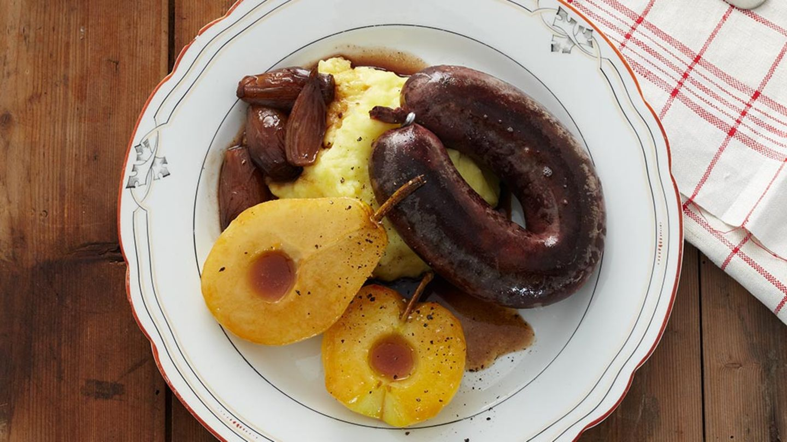

Himmel und Erde is a traditional German dish originating as far back as the 18th century. Literally translated, the name of the dish means Heaven and Earth, derived from the old word for potatoes – Erdapfel. The dish consists of mashed potatoes that are paired with apple sauce.
Meal prep time : 30 minutes
Servings : 4